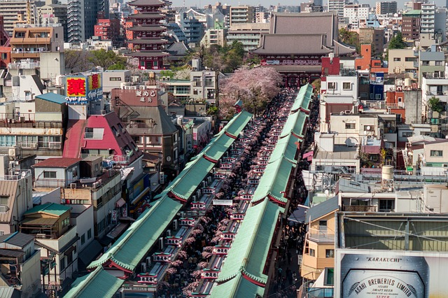
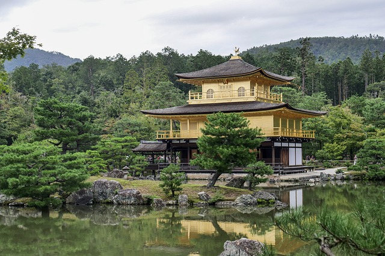

Japan - Cultural Enthusiast Itinerary
Day 1-3: Tokyo

- Visit the historic district of Asakusa to explore Senso-ji Temple and Nakamise Shopping Street.
- Discover Japan's modern art scene at Mori Art Museum and teamLab Borderless.
- Attend a traditional kabuki or Noh theater performance for an immersive cultural experience.
Day 4-6: Kyoto

- Explore Kyoto's UNESCO World Heritage Sites, including Kinkaku-ji (Golden Pavilion) and Kiyomizu-dera Temple.
- Participate in a traditional tea ceremony and learn about the art of Japanese tea preparation.
- Take a day trip to Nara to visit Todai-ji Temple and Kasuga Taisha Shrine, surrounded by ancient cedar trees.
Day 7-9: Kanazawa

- Explore Kanazawa's well-preserved Edo-era districts, including Higashi Chaya and Nagamachi Samurai District.
- Visit Kenrokuen Garden, one of Japan's three most beautiful landscape gardens, and Kanazawa Castle.
- Experience a traditional kaiseki ryori (multi-course meal) at a local ryokan for an authentic taste of Japanese cuisine.
.